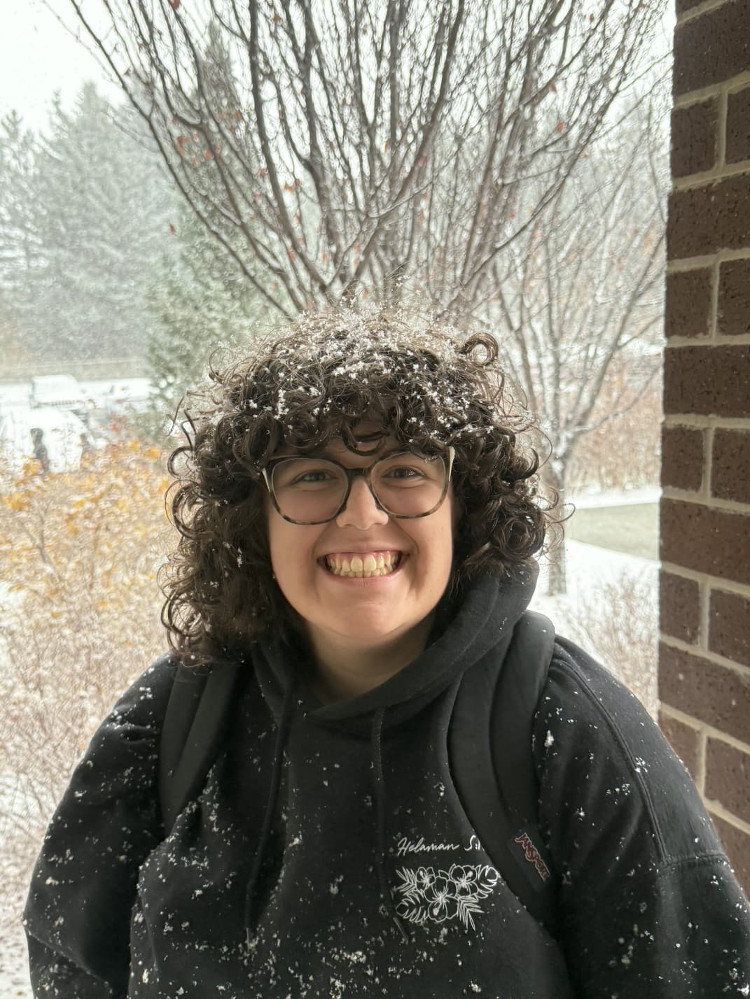
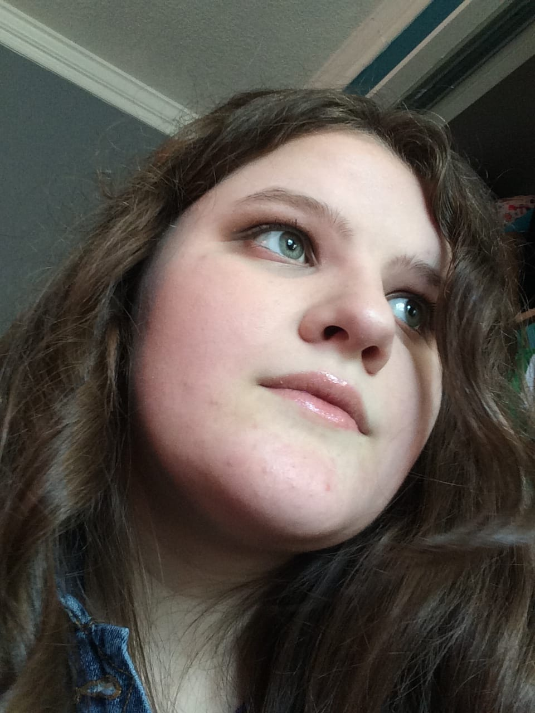

This is a murder mystery ARG website where you are looking around to find out who died, who killed them, and why? This is my first time making an ARG website like this so it probably won't be perfect but I'm doing my best and I hope you enjoy it! Obviously none of the events in this story are actually true. Everything you are about to discover is completely fictional and staged. Special thanks to all my amazing friends who have been willing to help me create this strange project and bring this story to life!
There are 2 websites that you can explore here with hidden clues and information that will help you solve the case. The first one is an obituary page of the person who was found dead. The second is a blog page that someone who knew the deseased person in college when they were roommates. Clearly something went wrong but what! That's why your here! Below is a special message from your superior, Detective March.
"Hey Rookie! Thank goodness you're here! I'm Detective March, the lead detective on this case. I'll be doing some investigating in person while you find out as much as you can on this end. Anything could be a clue or a hint in the right direction! Remember your detective training, kid. We're counting on you, Rookie."
Jessica Darwin played by Madelyn Sonne
Edythe Millhouse played by Lucy Gibson
Venus Dean played by Jaylie Fackrell

Samson White played by Carter Marshall
Dr. Aida Ruth played by Sophie Lowry
Detective Holly March played by Robyn Fort
Written, Directed, and Created by Autumn Goodbaudy
